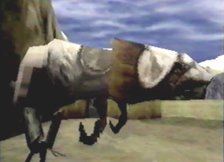

Reptile-like Coolia  |
Info Towards the back of the Village of Zoah, I found another Coolia prancing around. Compared to the Coolias at the caravan, who had dark brown skin and giant nostrils, this Coolia looked more reptile-like. It had gray scaly skin and dark black eyes. I had no idea there were different types of Coolias, until now. I assumed it must have been Aldo's or Radgam's Coolia, since they were both hunters. It was very well trained and domesticated. |